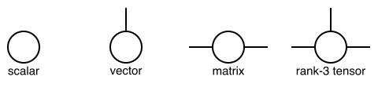

Background Knowledge
Tensors and Tensor Networks
Tensor networks serve as a fundamental tool for modeling and analyzing correlated systems. This section reviews the fundamental concepts of tensor networks.
A tensor is a mathematical object that generalizes scalars, vectors, and matrices. It can have multiple dimensions and is used to represent data in various mathematical and physical contexts. It is formally defined as follows:
Definition (Tensor): A tensor $T$ associated to a set of discrete variables $V$ is defined as a function that maps each possible instantiation of the variables in its scope $\mathcal{D}_V = \prod_{v\in V} \mathcal{D}_{v}$ to an element in the set $\mathcal{E}$, given by
\[T_{V}: \prod_{v \in V} \mathcal{D}_{v} \rightarrow \mathcal{E}.\]
Within the context of probabilistic modeling, the elements in $\mathcal{E}$ are non-negative real numbers, while in other scenarios, they can be of generic types. The diagrammatic representation of a tensor is given by a node with the variables $V$ as labels on its edges, as shown below:
Definition (Tensor Network): A tensor network is a mathematical framework for defining multilinear maps, which can be represented by a triple $\mathcal{N} = (\Lambda, \mathcal{T}, V_0)$, where:
- $\Lambda$ is the set of variables present in the network $\mathcal{N}$.
- $\mathcal{T} = \{ T_{V_k} \}_{k=1}^{K}$ is the set of input tensors, where each tensor $T_{V_k}$ is associated with the labels $V_k$.
- $V_0$ specifies the labels of the output tensor.
Specifically, each tensor $T_{V_k} \in \mathcal{T}$ is labeled by a set of variables $V_k \subseteq \Lambda$, where the cardinality $|V_k|$ equals the rank of $T_{V_k}$. The multilinear map, or the contraction, applied to this triple is defined as
\[T_{V_0} = \texttt{contract}(\Lambda, \mathcal{T}, V_0) \overset{\mathrm{def}}{=} \sum_{m \in \mathcal{D}_{\Lambda\setminus V_0}} \prod_{T_V \in \mathcal{T}} T_{V|M=m},\]
where $M = \Lambda \setminus V_0$. $T_{V|M=m}$ denotes a slicing of the tensor $T_{V}$ with the variables $M$ fixed to the values $m$. The summation runs over all possible configurations of the variables in $M$.
For instance, matrix multiplication can be described as the contraction of a tensor network given by
\[(AB)_{\{i, k\}} = \texttt{contract}\left(\{i,j,k\}, \{A_{\{i, j\}}, B_{\{j, k\}}\}, \{i, k\}\right),\]
where matrices $A$ and $B$ are input tensors containing the variable sets $\{i, j\}, \{j, k\}$, respectively, which are subsets of $\Lambda = \{i, j, k\}$. The output tensor is comprised of variables $\{i, k\}$ and the summation runs over variables $\Lambda \setminus \{i, k\} = \{j\}$. The contraction corresponds to
\[(A B)_{\{i, k\}} = \sum_j A_{\{i,j\}}B_{\{j, k\}}.\]
Diagrammatically, a tensor network can be represented as an open hypergraph, where each tensor is mapped to a vertex and each variable is mapped to a hyperedge. Two vertices are connected by the same hyperedge if and only if they share a common variable. The diagrammatic representation of the matrix multiplication is given as follows:
Here, we use different colors to denote different hyperedges. Hyperedges for $i$ and $k$ are left open to denote variables of the output tensor. A slightly more complex example of this is the star contraction:
\[\texttt{contract}(\{i,j,k,l\}, \{A_{\{i, l\}}, B_{\{j, l\}}, C_{\{k, l\}}\}, \{i,j,k\}) \\ = \sum_{l}A_{\{i,l\}} B_{\{j,l\}} C_{\{k,l\}}.\]
Note that the variable $l$ is shared by all three tensors, making regular edges, which by definition connect two nodes, insufficient for its representation. This motivates the need for hyperedges, which can connect a single variable to any number of nodes. The hypergraph representation is given as:

Einsum notation
The einsum notation is a compact way to specify tensor contractions with a string. In this notation, an index (subscripts) is represented by a char, and the tensors are represented by the indices. The input tensors and the output tensor are separated by an arrow -> and input tensors are separated by comma ,. For example, the matrix multiplication $\left(\{i,j,k\}, \{A_{\{i, j\}}, B_{\{j, k\}}\}, \{i, k\}\right)$ can be concisely written as "ij,jk->ik". A general contraction can be defined with pseudocode as follows:
Let A, B, C, ... be input tensors, O be the output tensor
for indices in domain_of_unique_indices(einsum_notation)
O[indices in O] += A[indices in A] * B[indices in B] * ...
endExamples
| einsum notation | meaning |
|---|---|
ij,jk->ik | matrix matrix multiplication |
ijl,jkl->ikl | batched - matrix matrix multiplication |
ij,j->i | matrix vector multiplication |
ij,ik,il->jkl | star contraction |
ii-> | trace |
ij->i | sum |
ii->i | take the diagonal part of a matrix |
ijkl->ilkj | permute the dimensions of a tensor |
i->ii | construct a diagonal matrix |
->ii | broadcast a scalar to the diagonal part of a matrix |
ij,ij->ij | element wise product |
ij,kl->ijkl | outer product |
Please Einsum examples for code examples.